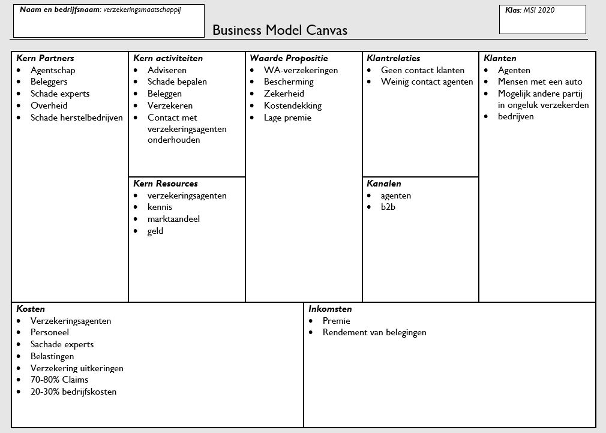
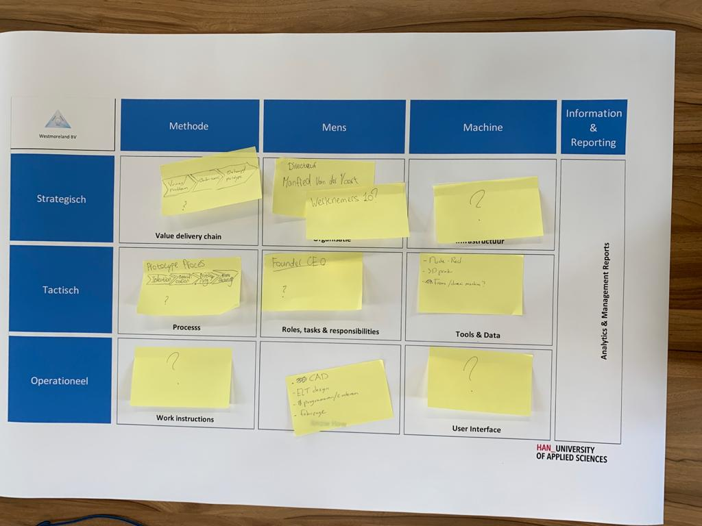

Smart competentie(s): Smart StartSmart Project
Gedurende van de minor kregen de studenten soms een workshop. Deze workshop was gebaseerd op het Business Model Canvas, georganiseerd door Geert Rensen. De gastspreker wou een realistisch beeld schetsen op een oude casus.
Omschrijving van de casus:
Internationale verzekeraar in een ander land biedt een breed pallet aan verzekeringen: bijv. levens-, schade-, inkomens- en pensioenverzekeringen. De concurrentie op de markt is zeer sterk, waardoor WA (MTPL) verzekeringen verliesgevend geworden voor deze verzekeraar. De verzekeraar wil graag actief blijven in deze markt (autoverzekeringen), omdat deze verzekeringen een basis vormen voor andere verzekeringen. Het bedrijf verkoopt zijn polissen via een agentennetwerk en heeft dus geen rechtstreeks contact met haar klanten. Samen met de mede minor studenten hebben we een BMC-model opgesteld, zie hieronder.
Ik heb hier nog een betere blik gekregen op het BMC-model. Alleen dit model heb ik zo vaak toegepast binnen de opleiding, dat het geen nieuwe leerstof voor mij was.

Een andere workshop van Smart Business was gefocust op het TOM-model. Deze les werd georganiseerd door Paul Kalis, de CEO van Quander.
Een Target Operating Model (TOM) wordt gebruikt om te beschrijven hoe een organisatie haar producten en diensten aanbiedt. Het is opgebouwd vanuit de strategie van de organisatie en beschrijft hoe deze haar mensen, informatie, processen en IT-systemen inzet om de klantpropositie daadwerkelijk te leveren.
Voor ontwerp en inrichting van een TOM moet een groot aantal inrichtingsvraagstukken beantwoord worden. Deze vraagstukken liggen onder meer op het gebied van de commerciële propositie, besturing, sourcing van bedrijfsprocessen en onderliggende technologische keuzes. Deze vraagstukken zijn veelal onderling afhankelijk en moeten daarom ook in onderlinge samenhang bezien worden. Een TOM biedt een goede structuur waarmee deze vraagstukken opgelost kunnen worden en daarmee vertaald worden naar de daadwerkelijke organisatie die noodzakelijk is.
Leidende principes van HR Target Operating Model:
Achteraf gezien heb ik het Tom model weinig toegepast binnen Smart Projects. In het begin heeft de projectgroep wel een begin gemaakt met het TOM-model, alleen niet verder uitgewerkt. Ik zou in de toekomstige projecten graag het Target operating model willen gebruiken.

Mocht u vragen hebben over het een of ander dan kunt u mij bereiken middels de volgende kanalen